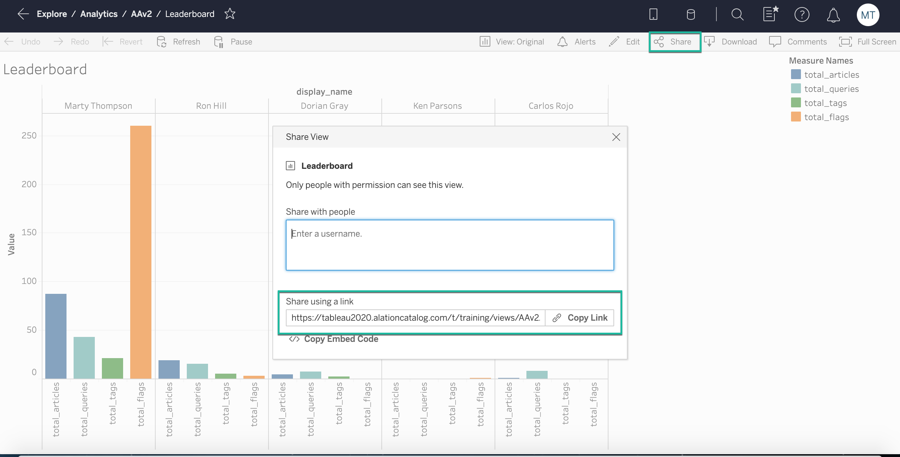
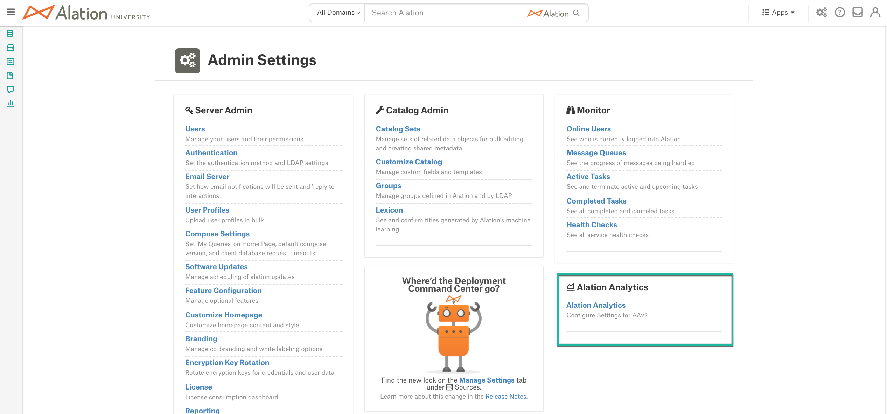
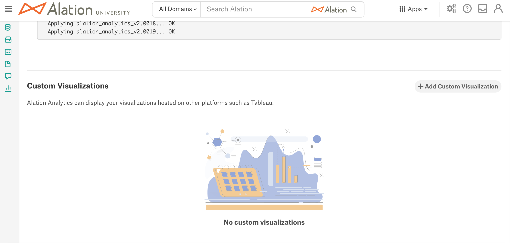
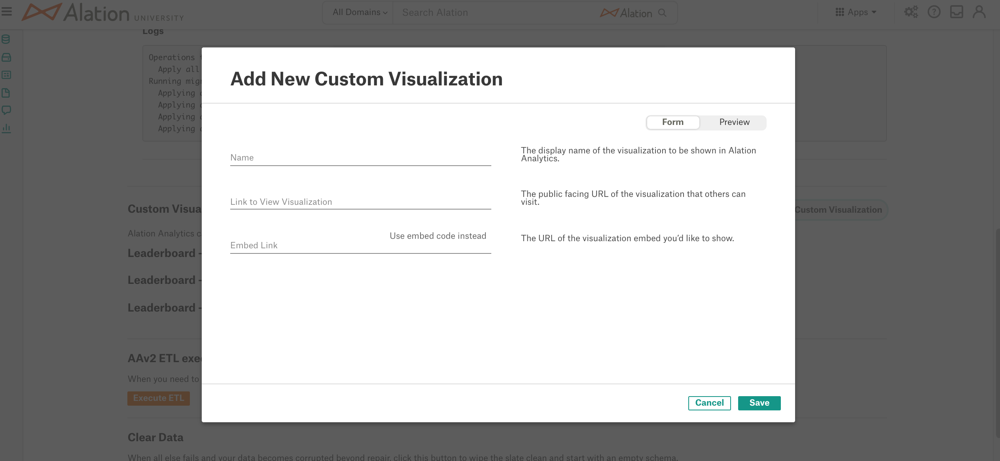
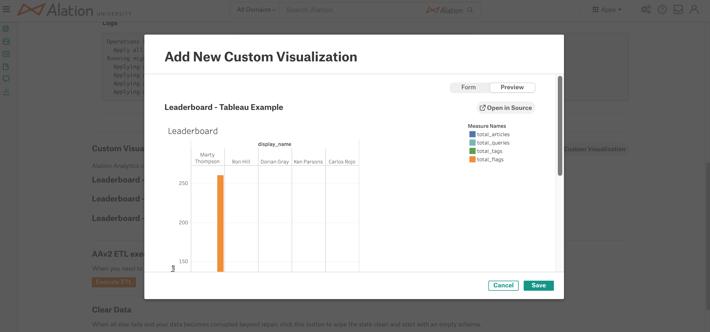
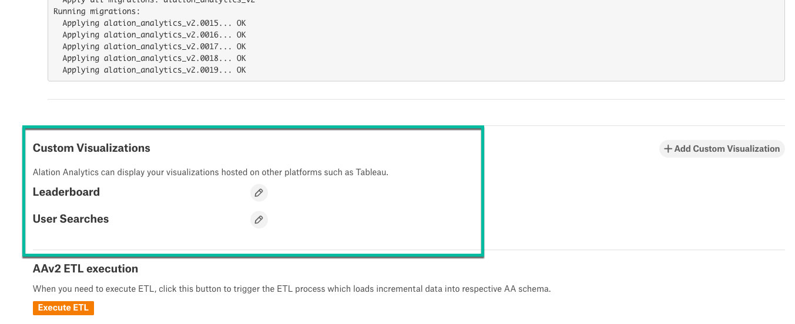
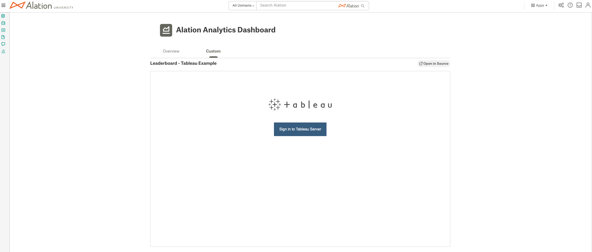
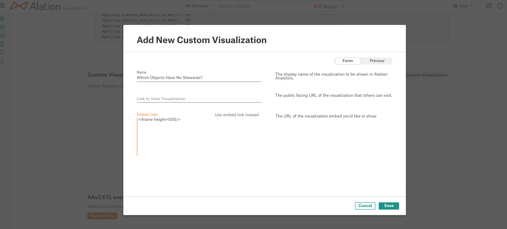
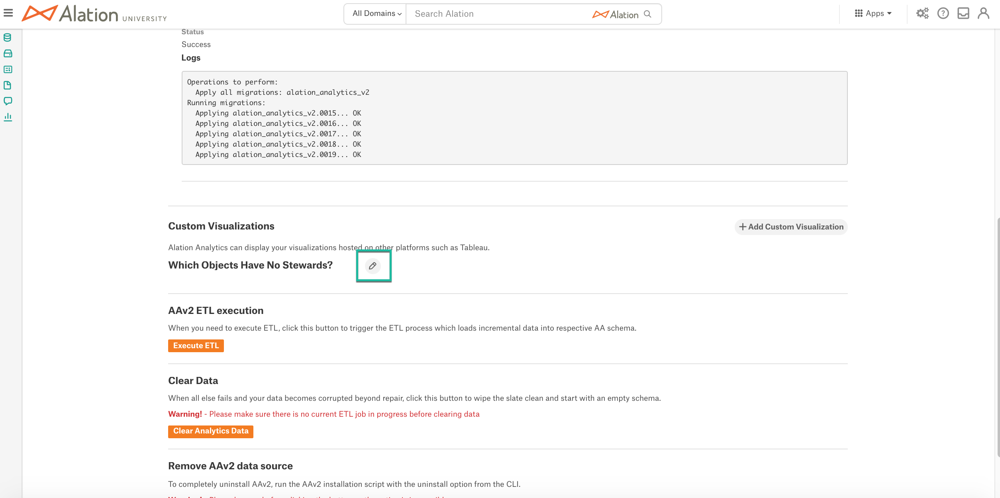
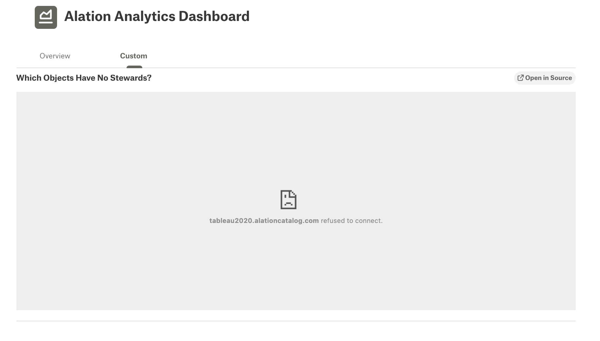

Embed External Visualizations¶
Alation Cloud Service Applies to Alation Cloud Service instances of Alation
Customer Managed Applies to customer-managed instances of Alation
Applies from release 2021.2
Overview¶
It is possible to display custom visualizations from Tableau on the Custom tab of the Alation Analytics V2 Dashboard. A Server Admin can configure the contents of the Custom tab on the Alation Analytics V2 Settings page. A number of steps will also need to be performed on the Tableau server. If the Tableau server uses SSO, then additional configuration may be required on the IdP side too.
To see embedded views on the Alation Analytics V2 Dashboard, a user must have a Tableau Server account in order to authenticate to the Tableau server from Alation.
Note
If you wish to connect to Alation Analytics V2 from Tableau and create custom visualizations, see Connect Third-Party BI Tools to Alation Analytics V2 for more details.
Configuration¶
Prerequisites¶
Secure Server Connection¶
Embedding visualizations into Alation requires SSL connections to the Tableau server and to the Alation server. Embedded visualizations will only load if both servers use secure connections.
Chrome Security Settings¶
Applies if users are using Chrome to access Alation
For the Chrome browser to load embedded views, the Tableau server version must support the login cookie property SameSite=None; Secure. Note that older versions of Tableau do not support SameSate=None; Secure, and you may need to either upgrade to the newer Tableau version or change the corresponding Chrome settings in order to use this feature. For Tableau versions 2019.4.1 and older, see the following recommendations on Chrome configuration: Embedded Views Fail to Load After Updating to Chrome 80+.
IdP May Require Additional Configuration¶
Applies if your Tableau server uses SSO
To view the embedded reports, users must authenticate on the Tableau server from Alation. If your Tableau server uses SSO authentication, you may need to configure your IdP to allow logins from an embedded iFrame:
Okta example: Okta in IFrame is not working
Step 1: Copy Embed Links for Visualizations¶
On the Tableau server, find the shareable link for the View you want to embed to the Alation Analytics V2 Dashboard. The Share button at the top of each View opens a dialog from which you can copy the embed link.
Copy the shareable links of the views you want to embed and note them down:
Step 2: Configure the Embed Link¶
When you copy the shareable link, Tableau adds a number of parameters to this link. The link you copy will look similar to:
https://10.15.13.154/views/Superstore/Customers?:showAppBanner=false&:display_count=n&:showVizHome=n&:origin=viz_share_link
You can modify the shareable link by applying additional parameters and/or deleting the parameters that were added automatically. For details on what each parameter means, refer to Parameters For Embed Code in Tableau documentation for your Tableau version.
Important
Alation does not support JavaScript tags in embedded links. When configuring the embed link, use only the URL parameters for iframe tags.
Step 3: Check That the Embed Link Includes the Embed Parameter¶
Check that the embed link you have formed includes the parameter embed=yes. If not, add it. This is to allow embedding when clickjack protection is enabled on the Tableau server.
Example:
https://10.15.13.154/views/Date-Time/DateCalcs?:embed=yes
Step 4: Configure the Custom Tab¶
Sign in to Alation and go to Admin Settings > Alation Analytics:
On the Alation Analytics Settings page, locate section Custom Visualizations:
Click + Add Custom Visualization.
Specify a name in the Name field. It will appear on the Alation Analytics V2 Dashboard as the name of the embedded view.
In the field Link to View Visualization, paste the URL of the view on the Tableau server. This link will be tied to the Open In Source button that will appear for this embedded view on the Alation Analytics V2 Dashboard and will allow users to navigate to this view on the Tableau server.
There are two ways to embed visualizations: using the embed links or using the embed code. To use the embed link, in the Embed Link field, paste the shareable link you have prepared. See Use Embed Code Instead below for information about how to use the Embed Code field.
You can click Preview on the top right of the dialog to preview the visualization:
To return back to the form, click Form.
Click Save. The name of the visualization you added will be listed under Custom Visualizations:
Note
Added visualizations cannot be sorted. They will appear in the order you add them, newly added visualization on top.
Go to the Alation Analytics V2 Dashboard and click the Custom tab. If your configuration is correct, the embedded visualization will be displayed under Custom with ability to sign in to the Tableau server:
Sign in to Tableau, authenticating with your Tableau credentials. After sign-in, the embedded visualization will load to the dashboard.
Note
If the Tableau server uses SSO, you should be redirected to the login page of the IdP to provide your credentials when authenticating.
{kind=link}
Use Embed Code Instead¶
When configuring embedded visualizations, you have an option to use embed code. It allows users to insert their own custom iframe code. This field accepts arbitrary text content and only the <iframe /> elements:

Select the Use embed code instead option if you would like to apply custom height or width to the iframe or enable other iframe attributes.
For example, if after using the embed link you discover that a visualization is not displayed properly on the screen and needs adjusting, use embed code instead and adjust the display using the <iframe/> attributes.
Note
If you copy the embed code from the Share dialog on the Tableau server and paste it to the Use embed code instead field, this code will not work in Alation. Alation only supports the <iframe/> code for adjusting the display of embedded visualizations.
Edit or Remove Embedded Visualizations¶
To edit or remove an embedded visualization,
Click the Pencil icon next to this visualization under Custom Visualizations:
In the Visualization editor that opens, you can edit its properties or remove it by clicking the Delete Visualization button.
Troubleshooting Embedded Visualizations¶
<servername> refused to connect¶

Any third party web page (Tableau) to be embedded into an application (Alation) needs to have its server settings configured so that it allows certain pages to be embedded in others.
If you encounter the <servername> refused to connect error, check the following:
X-Frame-Options
When the X-Frame-Options on the Tableau server are set to
same-originordeny, the visualization will not load and you will see the<servername> refused to connecterror when previewing embedded visualizations or when trying to view them on the Alation Analytics V2 Dashboard. See, for example, recommendations from Tableau concerning Chrome 80+Clickjack protection settings on the Tableau server: Clickjack Protection
Make sure that the embedded link is configured correctly: it should be allowed to be viewed in a 3rd party context. See Step 3: Check that the Embed Link Includes the Embed Parameter
If your Tableau server uses SSO, check that the IdP allows logins from embedded iframes.